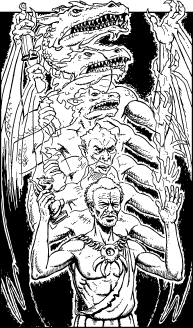

102
The dragon lands at his lair in the mountains and folds his wings to allow you to climb down easily from his scaly back. Carefully you place the bronze statuette into his clawed hand and witness a wondrous transformation take place. Slowly the dragon shrinks and its body changes into that of a tall man with a proud and noble countenance. He introduces himself to you as Cresosa, the leader of the Rivorzha tribe who dwell on the eastern slopes of the Hulhuk Mountains. Unlike the villagers, Cresosa’s people have resisted Ulonga’s evil rule, even though their resistance has forced them out of their coastal villages to seek refuge in the mountains. The statuette has broken a curse placed upon Cresosa by Ulonga the Shaman, and now he is able to return to his people and lead them back to their abandoned homes.
Before you say farewell, Cresosa offers you two Potions of Laumspur (each of these Backpack Items will restore 4 ENDURANCE points when swallowed after combat). He then gives you directions which take you back to the trail, to a place where a bridge crosses a steep-banked river. Your map tells you that this is a tributary of the River Ito, and you decide to stop here to rest until dawn before continuing your trek to Caeno on foot.

Unless you possess the Discipline of Grand Huntmastery, you must now eat a Meal or lose 3 ENDURANCE points.
To continue, turn to 300.